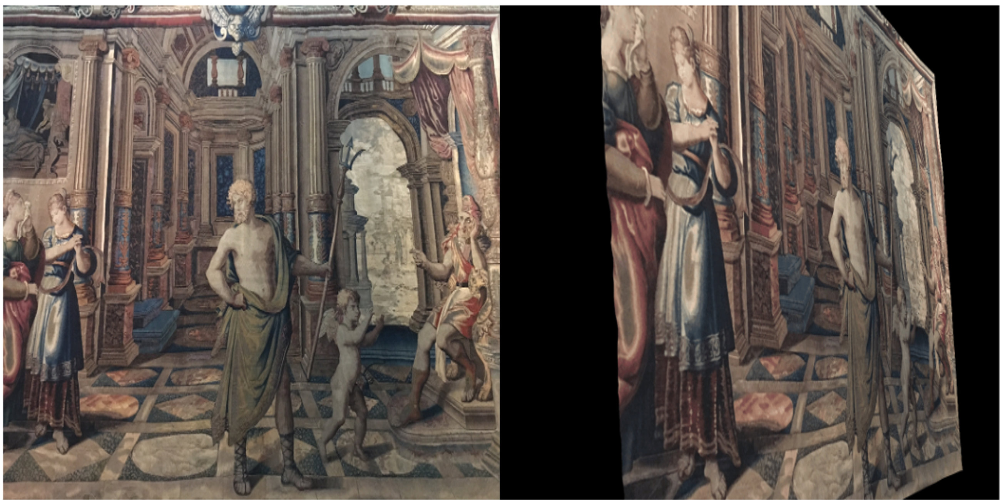

Work Experience
Research Intern at Adobe, San Jose, CA (2024.05 - 2024.08)
Mentors: Yang Zhou, Feng Liu, Jing Shi, Difan Liu, Zhan Xu
Project: Encoder-based Consistent Human Character Customization
Research Intern at Naver Cloud, Seoul, Korea (2023.04 - 2023.10)
Mentors: Seunggyu Chang, Heesu Kim, DongJae Lee
Project: Training-free Semantically Consistent Text-to-Image Customization
Publications

Local All-Pair Correspondence for Point Tracking
Seokju Cho, Jiahui Huang, Jisu Nam, Honggyu An, Seungryong Kim†, Joon-Young Lee†
ECCV 2024

DreamMatcher: Appearance Matching Self-Attention for Semantically-Consistent Text-to-Image Personalization
Jisu Nam, Heesu Kim, DongJae Lee, Siyoon Jin, Seungryong Kim†, Seunggyu Chang†
CVPR 2024

Diffusion Model for Dense Matching
Jisu Nam, Gyuseong Lee, Sunwoo Kim, Hyeonsu Kim, Hyoungwon Cho, Seyeon Kim, Seungryong Kim
ICLR 2024, Oral, 1.2% acceptance rate

Neural Matching Fields: Implicit Representation of Matching Fields for Visual Correspondence
Sunghwan Hong, Jisu Nam, Seokju Cho, Susung Hong, Sangryul Jeon, Dongbo Min, and Seungryong Kim
NeurIPS 2022